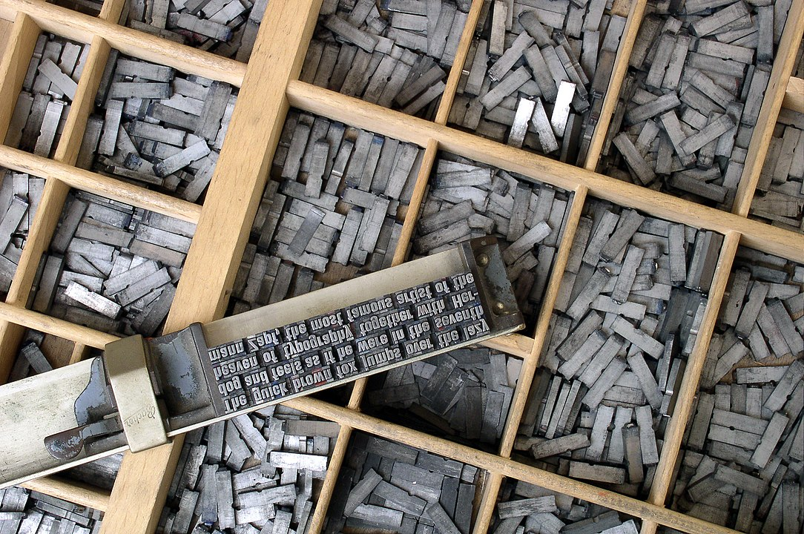
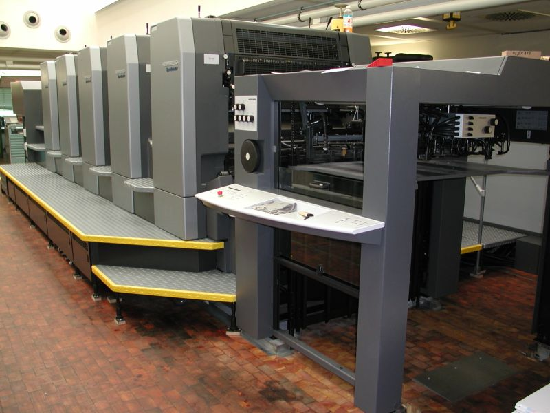
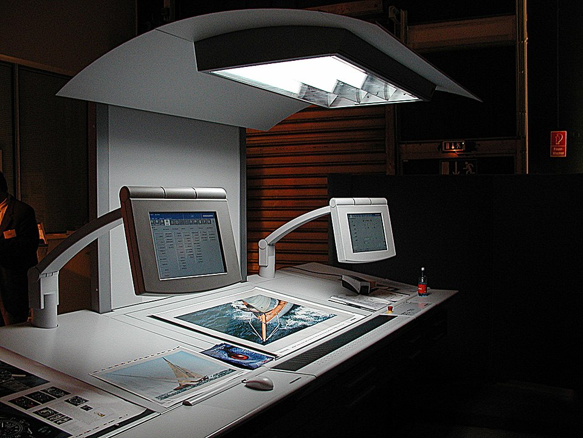

A nyomtatás dokumentumok sokszorosítására szolgáló eljárás. Kínában már a 8. században feltalálták, Európában viszont csak a reneszánsz korban jelent meg, a Johannes Gutenberg-féle nyomdaprés volt az első európai nyomdagép. Az évszázadok során sok eltérő nyomtatási eljárás fejlődött ki.
A nyomtatás Kínában már a 8. században feltehetőleg ismert volt. A ma ismert legrégebbi bizonyíték egy 868-ban készült Gyémánt szútra, de a források alapján már 812-től papírpénzt is előállítottak, amelyhez nélkülözhetetlen a nyomtatás. A magasnyomtatás kezdetleges formáját, a fadúcos nyomtatást alkalmazták, amely abból állt, hogy egy kézzel vésett falapot befestékeztek, majd egy papírlapot ráterítettek, és száraz kefével a hátoldalát dörzsölve hozzásimították. Ugyanekkor már megpróbálkoztak fából faragott, szedhető írásjegyekkel is, jó néhány nyomtatott könyvet készítettek, de az eljárás nem terjedt el széles körben.

1796-ban Alois Senefelder feltalálja a litográfiát, és ezzel együtt kidolgozta a síknyomtatás elvét. Először maratással kialakított rézlemezt használ magasnyomóformaként, majd olcsóbb anyagokat keres. Kísérletei közben mészkövet is használ, melynél véletlenül felfedezi, hogy a vizes felületen nem tapad meg a festék. Az ő nevéhez fűződik még a fémfelületről történő síknyomtatás bevezetése is.

Ugyanez az elv az alapja a bádognyomtatásnak is, melyet plakátgyártásnál, konzervdoboz gyártásnál használtak. Szintén ebből fejlődött ki a ma leginkább elterjedt ofszetnyomtatás, mely szintén egy közvetett nyomtatási forma.
A 19. században újra felbukkan egy némileg feledésbe merült technológia, a szitanyomtatás. A textiliparban használják, ahol filmnyomásnak nevezték el. Főleg a lyoni selyemiparban volt használatos, selymek díszítésére. Kialakulásáról keveset tudunk, annyi azonban bizonyos, hogy Kínában és Japánban már évszázadokkal ezelőtt használták textilfestésre. A formát fakeretbe erősített emberi haj, később selyemszál alkotja, ráragasztott rizspapírból kivágott sablonnal. A módszer maga nem sokat változott, de ma már modernebb anyagokat és gyártástechnológiát alkalmaznak. A különböző sűrűségű szitaszövetekből sok esetben fototechnikai úton készítik a nyomóformát. Szitanyomtatással olyan anyagok állíthatók elő, amik mással csak nehezen, vagy egyáltalán nem. Manapság is a textilipar használja leginkább, de így gyártják például a közúti jelzőtáblákat is. Papírra is nyomnak vele, általában kis példányszámú névjegyek, plakátok gyártására ideális, de sok esetben használják ofszetnyomatok díszítő jellegű felülnyomására többnyire színtelen UV fényre száradó lakkokkal. Ezek mellett a művészetben is használatos grafikai eljárás.
A 20. század elején tökéletesítik a mélynyomtatást, melynek elve az őskorig nyúlik vissza, majd később az ötvösművészek fejlesztették tovább. A 15. századig kézzel vésték a formákat. Majd savas maratással finomabb árnyalatok visszaadását is lehetővé tették. Ez az eljárás kimondottan művészeti célokra volt használatos. Klics Károly angliai útja során megismerkedik William Henry Fox Talbot találmányával, melynek lényege az, hogy bizonyos sók nagymolekulájú szerves anyagban fényérzékenyekké válnak. Emellett tanulmányozza az akkori modern textiliparban használt mélynyomó gépeket. Ezeket az ismereteket felhasználva kifejleszti a fényképészeti úton történő formakészítést, és a rácsmélynyomtatást. Lényegében az ő találmányát hívjuk ma hagyományos értelemben mélynyomtatásnak. Ezt az elvet alkalmazzák a tamponnyomtatásban is, mely hasonlóan az ofszetnyomtatáshoz, egy közvetett nyomtatási forma. Először egy rugalmas anyagra mélynyomtatással juttatják a festéket, aztán ezt az anyagot nyomják a nyomandó felületre. Az anyag rugalmassága lehetővé teszi, hogy nem csak sík felületnél használható. Manapság többek közt ajándék, és reklámtárgyak (például tollak, öngyújtók) esetében alkalmazzák.
A számítástechnika fejlődésével fokozatosan épültek be a nyomdaiparba. Először a fényszedésnél jelentek meg szövegek szerkesztésénél, tördelésénél, majd a fényképészetben is elterjedtek. Ezután megjelentek a nyomóformakészítésben is. Legelterjedtebb formája az ofszetnyomtatásnál alkalmazott CTP. A személyi számítógépekhez használt nyomtatók ugyan már régóta digitális eljárásokkal működnek, de nyomdászati célokra kevés területen használják. A hagyományosan nyomóformáról történő nyomtatással szemben eléggé lassúnak mondható. Eleinte kisebb példányszámú, kevésbé igényes termékeket gyártottak vele, de napjainkban akár 4-500 példányszámú nyomatok gazdaságos, jó minőségű nyomtatására is van lehetőség.

Egy színes plakát nyomtatásának költségét meghatározó tényezők többek közt a papírlap minősége és a papírlap mérete
A következő űrlapon plakátnyomtatáshoz lehet árat kalkulálni: